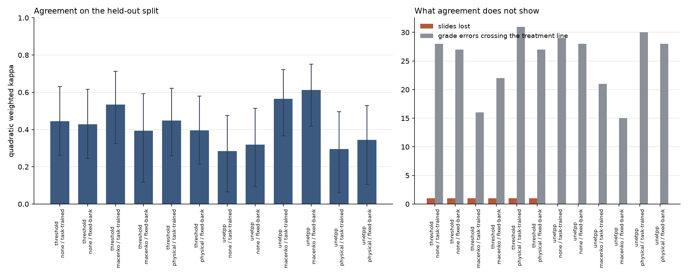

12 cells · tissue detection x colour handling x tile encoder · content digest 536b849004640063
wsi_ablation/synth.py. No wet-lab or patient data is used or claimed. The generator builds in the three effects under test - stain fading, scanner colour drift, and grade rendered as morphology - so what this run demonstrates is that the instrument detects those effects and reports the failures agreement hides. Testing whether the effects hold on archival material is what the instrument is for.| code version | 0.1.0 | git | 48d836a |
|---|---|---|---|
| config hash | a8ab3c2e09fb9663892dc7f4e314363df24265516fb6dbcb6cd8988e23135e8e | ||
| data hash | 8469402c9ba161a697501800a1ea65d5bca73d0bc3dc0097f1eb898f054cd404 | ||
| content digest | 536b849004640063 | python | 3.12.12 |

| tissue | colour | encoder | kappa_w | 95% CI | accuracy | slides lost | threshold crossings | graded | tiles/slide |
|---|---|---|---|---|---|---|---|---|---|
| threshold | none | task-trained | 0.445 | 0.26 to 0.63 | 0.369 | 1 | 28 | 65 | 23.2 |
| threshold | none | fixed-bank | 0.428 | 0.24 to 0.62 | 0.369 | 1 | 27 | 65 | 23.2 |
| threshold | macenko | task-trained | 0.535 | 0.33 to 0.71 | 0.492 | 1 | 16 | 65 | 23.2 |
| threshold | macenko | fixed-bank | 0.394 | 0.12 to 0.59 | 0.338 | 1 | 22 | 65 | 23.2 |
| threshold | physical | task-trained | 0.448 | 0.26 to 0.62 | 0.308 | 1 | 31 | 65 | 23.2 |
| threshold | physical | fixed-bank | 0.395 | 0.21 to 0.58 | 0.308 | 1 | 27 | 65 | 23.2 |
| unetpp | none | task-trained | 0.284 | 0.06 to 0.48 | 0.303 | 0 | 29 | 66 | 24.0 |
| unetpp | none | fixed-bank | 0.319 | 0.09 to 0.51 | 0.242 | 0 | 28 | 66 | 24.0 |
| unetpp | macenko | task-trained | 0.564 | 0.37 to 0.72 | 0.394 | 0 | 21 | 66 | 24.0 |
| unetpp | macenko | fixed-bank | 0.613 | 0.42 to 0.75 | 0.409 | 0 | 15 | 66 | 24.0 |
| unetpp | physical | task-trained | 0.296 | 0.06 to 0.50 | 0.242 | 0 | 30 | 66 | 24.0 |
| unetpp | physical | fixed-bank | 0.344 | 0.11 to 0.53 | 0.242 | 0 | 28 | 66 | 24.0 |
Read the left panel and the right panel together. Cells that sit within each other's confidence intervals on agreement can still differ in how many slides never reached the grader, and in how many of the errors they did make moved a case across the surveillance-to-treatment line. Those are the two columns a method section usually omits, which is the omission this repository exists to argue against.